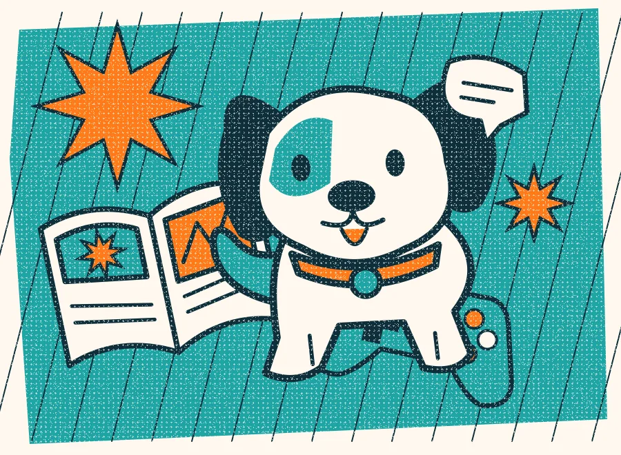
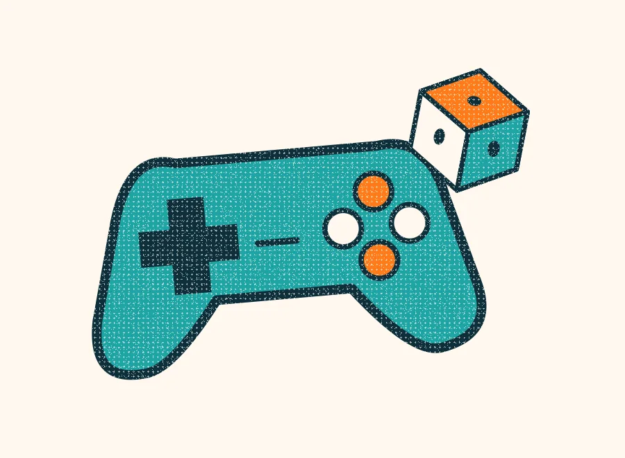
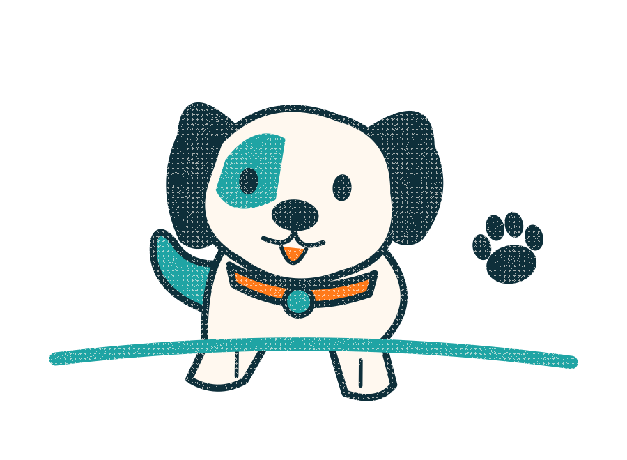

Comics zum Anfassen
Entdecke unabhängige Zeichner:innen, selbstgedruckte Hefte und kleine Auflagen. Frag nach dem nächsten Kapitel, sammle Signaturen oder gestalte deinen eigenen Comic mit einer vierbeinigen Hauptfigur.
01 / AUSGABE 2027
Die Comic- und Spielemesse für Hundemenschen.

Du liebst Comics, würdest am liebsten jedes neue Brettspiel ausprobieren und möchtest deinen Hund dabei nicht zu Hause lassen? Dann ist Pfotenpixel dein Treffpunkt. Am Samstag, dem 12. Juni 2027, verwandeln wir die fiktive Kulturhalle Pfotenwerk in Hamburg in eine lebendige Mischung aus kleinem Comicfestival, Spielzimmer und hundefreundlichem Begegnungsort. Von 10 bis 18 Uhr ist Zeit zum Stöbern, Zeichnen, Spielen und Schnuppern.
Entdecke unabhängige Zeichner:innen, selbstgedruckte Hefte und kleine Auflagen. Frag nach dem nächsten Kapitel, sammle Signaturen oder gestalte deinen eigenen Comic mit einer vierbeinigen Hauptfigur.

Ob kooperatives Brettspiel, Würfelabenteuer oder leise Retro-Games: An den Spieltischen findest du neue Mitspieler:innen. Unsere Spielleiter:innen erklären die Regeln, damit niemand lange warten muss.

Wasserstellen, breite Wege und eine ruhige Rückzugsecke gehören zum Messekonzept. Dein Hund darf mitkommen, solange er sich wohlfühlt. Du entscheidest, wann es Zeit für eine Pause ist.
Wir denken den Besuch aus Sicht von Hundemenschen: keine lauten Bühnen direkt neben den Ruheplätzen, ausreichend Platz zwischen den Tischen und kein Zwang zur Begegnung. Bring eine kurze Leine, Wasser, Kotbeutel und eine vertraute Decke mit. Wenn deinem Hund Menschenmengen zu viel werden, ist ein kürzerer Besuch oder ein Tag ohne ihn genauso willkommen.
Auch ohne Hund kannst du natürlich mitmachen. Pfotenpixel verbindet kreative Hobbys und respektvollen Umgang miteinander. Du musst weder Profi zeichnen noch jedes Spiel kennen. Lass dich treiben, nimm dir Zeit und entdecke eine neue Geschichte.
Hunderegeln lesenEin Tagespass kostet 12 Euro, Hunde sind kostenlos. Alle offenen Spielrunden und die Zine-Werkstatt sind im Eintritt enthalten. Schau vorab ins Programm, plane deine Anfahrt und reserviere unverbindlich im Ticketformular dieses Studienprojekts.
Zum Ticketformular